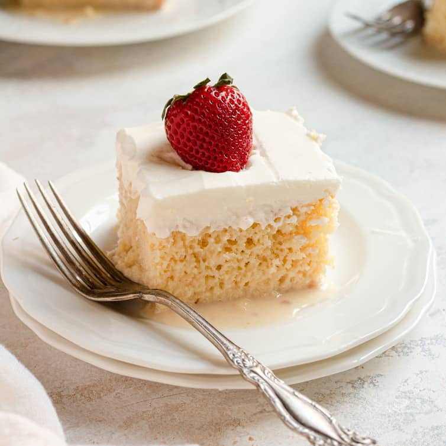
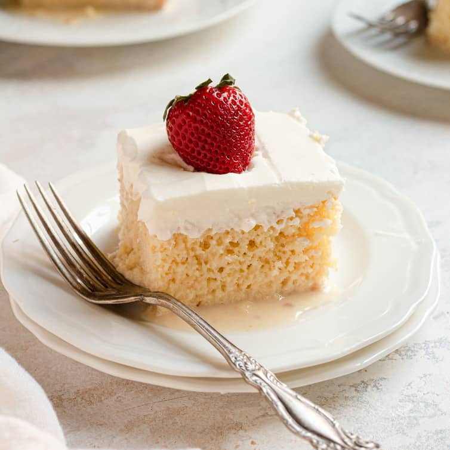

History
In the 19th century, there was a recipe floating around Mexico for a bread cake that was soaked in wine and topped with custard. This is thought to be a spin of the Italian tiramisu or the English trifle, both alcohol soaked sponge cakes with heavy cream, cheese and sugar! All recipes were a great way to reconstitute left over, stale cookies, cake or bread into a great dessert. With the European influence in Mexico during the 19th century it goes with little explanation why these soaked recipes became popular in the New World using European ingredients like custard, bread and wine. In the 1930's when the Nestle Company opened up plants in Mexico during World War II, a recipe for Tres Leches was printed on the outside of the evaporated milk, condensed milk and cream cans. Nestle is held responsible for taking the Tres Leche Cake mainstream. All recipes in Mexico use a combination of evaporated, condensed and cream in their recipe even today. It is this combination that makes it so irresistible and desired by both visitors and local in moderation.
The BEST authentic homemade Tres Leches Cake. An ultra light cake soaked in a sweet milk mixture and topped with fresh whipped cream and cinnamon.
This simple Mexican dessert is one of our favorites!
This delicious tres leches cake features three types of milk: whole milk, condensed milk, and evaporated milk. It's topped with sweet whipped cream. An excellent cake for milk lovers!
 
